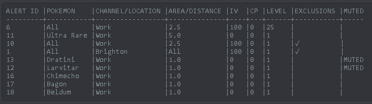

Showing Alerts & Exclusions¶
Viewing Filters¶
!alert show
Shows a list of alerts, sorted by pokedex number. It’s the go-to to see what’s going on with your alerts. Example:
There are a few extra sorting options for this command (always in ascending order):
!alert show name Returns a list sorted by Pokemon Name
!alert show channel Returns a list sorted by Channel
!alert show area Returns a list sorted by Area
Viewing Exclusions¶
If you alerts have exclusions (indicated by a ✓ in the exclusions column, you can view these by typing:
!exclude show <ID>
For exampple !exclude show 10. The ID can be found in the !alert show output as shown above.